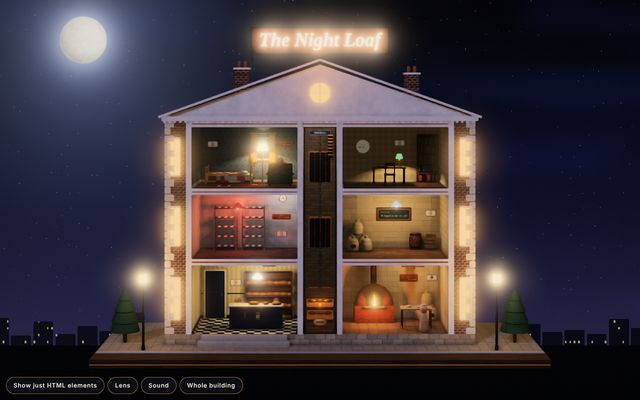
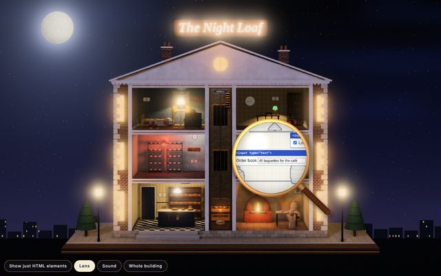
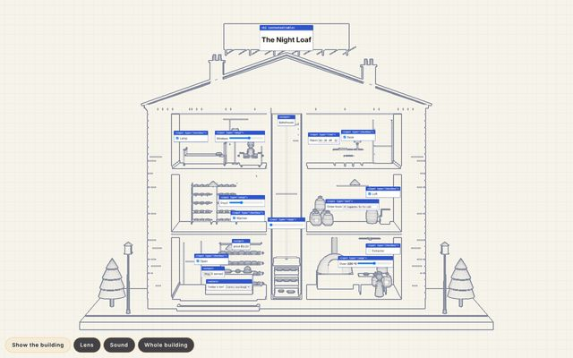
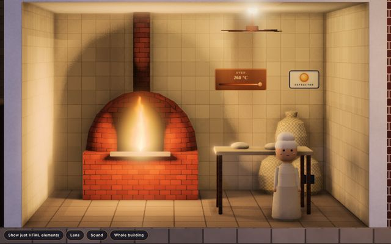
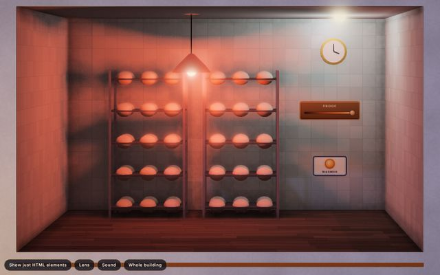
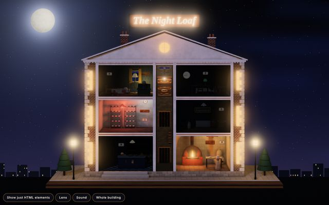

작업 흐름
- 입력
- 건물이 될 주제 한 줄 (밤의 빵집, 등대, 우주 정거장, 학교 …)
- 브리프
- 층과 칸, 방마다 소품 · 램프 · 컨트롤, 컨트롤이 하는 일, 색, 승강기, 소리
- 설계
- 건물 격자와 지붕 · 간판 · 거리, 방의 소품과 조명, 물건처럼 꾸민 컨트롤의 CSS와 동작
- 검증
- 모든 컨트롤과 쌍둥이가 그려진 자리에서 클릭되는지, 스위치 · 승강기 · 렌즈 · 결정성의 숫자 검사, 스틸 채점
- 출력
- index.html + lib/ 한 폴더 (네트워크 없이 file:// · Claude 아티팩트에서 동작), 스틸 PNG
node scripts/check.mjs examples/night-bakery/index.html
node scripts/still.mjs examples/night-bakery/index.html --out out --act idle,lens,plain
node scripts/new-page.mjs ../my-hotel
node scripts/check.mjs ../my-hotel/index.html요구 사항: Node + Playwright Chromium (검사와 스틸), 페이지는 Chrome · Edge 157+ 또는 Claude 데스크톱 앱. 단계별 순서는 SKILL.md에 있습니다.
샘플
예제와 템플릿을 HTML-in-Canvas를 켠 Chromium에서 찍은 스틸입니다. 카드를 누르면 그 상태의 라이브 데모가 열립니다.
밤의 빵집 examples/night-bakery
새벽 세 시의 빵집. 오븐 다이얼, 환풍기 스위치, 발효 슬라이더, 칠판의 주문서, 알람 시계, 가게 종, 빵 승강기가 모두 HTML입니다.

전체 · 쉬는 상태The Night Loaf가게, 굽는 방, 발효실, 밀가루 다락, 빵장수의 방, 사무실과 빵 승강기

돋보기유리 아래의 진짜 HTML칠판 주문서가 <input type="text">로, 유리 안에서도 클릭과 입력

HTML만 보기쌍둥이 컨트롤같은 컨트롤의 스타일 없는 쌍둥이, 양쪽이 서로 따라감

range · 260 °C굽는 방다이얼을 올리면 불이 커지고 빛이 주황에서 흰빛으로

range · 발효 100발효실반동 없는 느린 스프링으로 쟁반마다 부푸는 반죽

checkbox · 세로 range불을 끈 방, 올라간 승강기램프갓도 함께 꺼지고, 승강기는 층을 살짝 지나쳤다 자리 잡음
시작 템플릿 templates/index.html
네 방과 승강기가 있는 타운하우스. 모든 컨트롤 종류(체크박스, range, select, 텍스트, 버튼, output, 편집 가능한 간판)가 들어 있습니다.
실제 작품
이 레포에서 이 흐름(브리프 → 설계 → 검사 → 스틸 채점)으로 만든 예제와 스킬의 원본입니다.
「The Night Loaf」 · 밤의 빵집방 6개, 빵 승강기, 컨트롤 17개, 라이브 페이지hypertext-hotel/demo/examples/night-bakery/
원본 · 「Hotel Hypertext」Felix Rieseberg의 HTML-in-Canvas 데모claude.ai/artifact/WgPzNowvy1DGy3jeXhzNMD
HTML-in-Canvas 데모 모음데모 15개가 모인 페이지claude.ai/artifact/7cCNqKnoFSoib9SuNLB3vk
X 게시물 · All hail the weird webClaude 앱의 HTML-in-Canvas 발표x.com/felixrieseberg/status/2122036839238492493
링크
- SKILL.md 워크플로
- 폴더 lib · scripts · references · templates · examples
- README.md 빠른 시작
- references/BRIEF.md 주제 → 브리프, 스틸 검토 기준
- references/LOOK.md 원본 데모에서 본 것
- references/ENGINE.md 설정과 API, 소품 · 컨트롤 · 동작 추가
- references/HIC.md HTML-in-Canvas 공통 노트
- references/LESSONS.md 겪은 문제와 해결